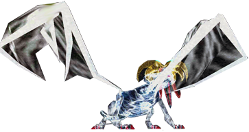
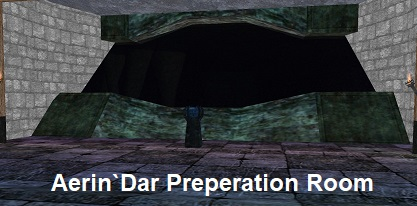
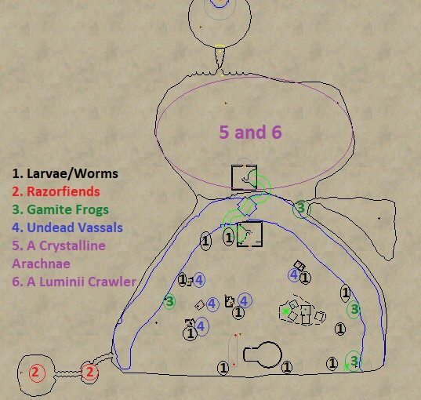
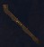
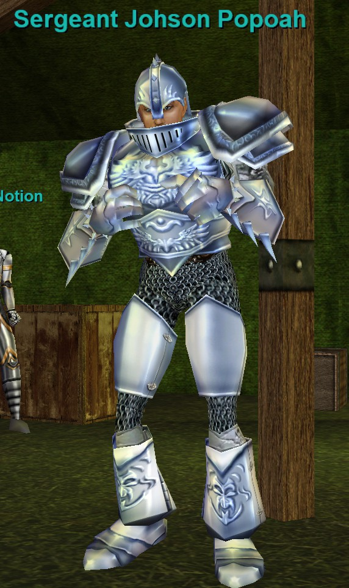

Aerin'Dar

Fight Info
Everyone should be invisible when running to the locked door. It is easy to train here. Spiders outside also see invisible. The guards outside the door will also attack people who are KoS if they are not invisible.
- Hits 327–1347 (PQDI; eqprogression estimated 1600+)
- Slowable
- Rampages
- Casts Glass Shards (375 DD on main tank, Magic Based)
- Casts Glass Roar (PBAE, Fear and 500 HP DoT, Magic Based)
- Has low HP — 300,000 (PQDI; eqprogression estimated 250K–300K)
There are untargetable golems in Aerin'Dar's Lair. These be become targetable during the fight. Have people designated to CC them. Rahlgon is mezzable and rootable, rest are immune to mez but can be rooted. Once the dragon is dead finish them off. They are trivial.
Note: It is highly recommended to pull Aerin'Dar off the platform he spawns on because it becomes a clickable fake floor that leads to Halls of Honor once Aerin'Dar is dead. Someone will inevitably click the floor causing other players to fall before they are able to get their Planar Projection Hail. The Planar Projection spawns where Aerin'Dar dies.
Once everyone has their Planar Projection Flag, the raid will want to drop down into the fake floor and clear all the mobs in the tunnel towards Halls of Honor. Click the lightning beams at the end of the tunnel to zone into Halls of Honor (see map) and complete your flag.



Loot
- Double-Edged Greatsword of Visions
- Honorable Longsword
- Honorary Amulet
- Ring of Nobility
- Shoulderpads of the Visionary
- Valorous Quarterstaff
- Wrath of Mithaniel
- Ethereal Parchment
- Spectral Parchment
| Level | 70 |
|---|---|
| HP | 300,000 |
| Hits | 327 - 1347 |
| Resistances | MR 80 / CR 75 / FR 65 / DR 45 / PR 45 |
| Special Abilities | Summon, Enrage, Rampage, Dual Wield, Do Not Equip, Magical Attack, Unmezzable, Uncharmable, Unstunnable, Unsnarable, Unfearable, Immune to fleeing, Immune to melee except magical |
| Can Cast | Glass Roar |
| Procs | Glass Shards |
Cross-referenced from pqdi.cc (Project Quarm Database Interface)
Crystalline Globe — Key to Aerin'Dar (Plane of Valor)
To complete this quest you’ll need to be fully flagged for Plane of Valor.
There are six quest items that you should farm upfront before beginning any quest dialogue. 1-4 drop in the bottom/south section of the zone, while 5 and 6 drop from the top/north.

- Planarian Larvae’s Heart: Drops from a festering worm, a planarian larvae. These mobs can be found scattered throughout the bottom section of the zone. They are mostly around undead towers and the river shore. Rare Drop.

- Razorfiend’s Heart: Drops from razorfiends in the caves on southwestern side of the zone. Uncommon Drop.
- Piece of the Crystalline Globe (Staff Icon): Drops from a Gamite Frog along the river shore in the bottom section of the zone. Rare Drop.

- Piece of the Crystalline Globe (Gem Icon): Drops from an Undead Vassal in the undead ruin buildings on the bottom section of the zone. Rare Drop.

- Crystalline Spider’s Heart: Drops from A Crystalline Arachnae. These spiders are all over the North/Top area of the zone. Common drop.
- Piece of the Crystalline Globe (Orb Icon): Drops from A Luminii Crawler, a named crawler in the North/Top section of the zone. PH can be any crawler. Always Drops.

Once you have obtained all 6 items, you can move onto the dialogue and quest turn-in.
WARNING: This quests dialogue is VERY sensitive. Doing one thing wrong can cause an NPC not to respond. If you turn in the items while an NPC is unresponsive, you will lose your items and have to get them again. Follow along and you shouldn’t have any issues. If something seems off or isn’t working, relog your character and restart the dialogue from the start
Quest NPC Locations

- Sergeant Johson Popoah
- Paralin Notion
- Master Sergeant Aaramis Daryln
- Captain Ryglot Cupperhide
A. Go to Sergeant Johson Popoah (loc -961, -523). He is in the tent area. Hail him TWICE. Do not respond to his text dialogue until after the second Hail.

>You say, ‘Hail, Sergeant Johson Popoah’ Sergeant Johson Popoah says ‘State your business or leave our [compound].’
>You say, ‘Hail, Sergeant Johson Popoah’ Sergeant Johson Popoah says ‘Leave now before there is bloodshed.’
>Say “compound”Sergeant Johson Popoah says ‘This is the primary command center for Che Virtuson. We fall under the leadership and guidance of Captain Ryglot. I must now ask you to leave.’
B. Speak to Paralin Notion (loc -961, -523) who is right behind Sergeant Johson Popoah

>You say, ‘Hail, Paralin Notion‘ Paralin Notion says ‘You’re either [brave], or you’re [stupid].’
>Say “brave”At this point Paralin does not always respond. This is normal
>Say “I will help your company“Paralin Notion says ‘We’re a part of the Battalion of Marr. We’re soldiers from Che Virtuson. We were dispatched to this part of the Plane of Valor to eliminate an age old target. Unfortunately, due to some recent events our mission has been placed on hold and our [squad] has been asked to remain behind.’
>Say “squad“Paralin Notion says ‘We are a part of Ducee Tapferson. Our squad is known for our bravery. We were successful in capturing this [razorfiend] earlier today. You’ve shown some bravery as well my friend and that is the reason I request your [assistance].’
>Say “razorfiend“Paralin Notion says ‘These vile beasts live in the caves west of here.’
>Say “assistance“Paralin Notion says ‘Many of us here are anxious to leave. Many wish to regroup with the rest of our company. Others wish to go back to the Halls to complete the [Trials].’
>Say “trials“Paralin Notion says ‘The Trials are overseen by the Heroes of Marr. It’s these Trials that allow us to rise in rank. Only those who have passed the trials are able to enter the Temple of Marr. Now if you wish to aid us I must ask you to do a few [things].’
>Say “things“Paralin Notion says ‘You must find the Master Sergeant and tell him that you are here to aid the cause.’
C. Go to Master Sergeant Aaramis Daryln (loc +446, -50) in the Fort. Do NOT hail him!

>Say “I am here to aid the cause”Master Sergeant Aaramis Daryln looks you over and says in a deep voice ‘What could you possibly do to aid our cause. Perhaps you think you can slay [Aerin'Dar] himself?’ The Master Sergeant begins to laugh uncontrollably. ‘I suggest you go back to whoever filled your head with this nonsense and stop wasting my time.’
>Say “Aerin‘Dar”Master Sergeant Aaramis Daryln says ‘I don’t have time to explain the glass dragon to you. Leave before I get angry.’
D. Go back to Paralin Notion (loc -961, -523)
>Say ‘Hail, Paralin Notion‘Paralin Notion says ‘I’m sorry the Master Sergeant was unable to help you. Perhaps you should [prove] yourselfbefore you attempt to jump ‘into the fire’ so to speak.’
>Say “prove“Paralin Notion says ‘We’ve been running into a lot of problems lately with the razorfiends and the planarian larvae. Many soldiers have been getting sick because of the infestations that they cause. Capture the hearts of a razorfiend, a crystalline spider and a planarian larvae and bring them back to me. Our squad had enough problems capturing this small razorfiend here. This will become your first so called ‘Trial’ ______. It should be enough to prove your worth.’
>Turn in the 3 hearts to Paralin Notion, Planarian Larvae’s Heart, Razorfiend’s Heart, Crystalline Spider’s Heart.Paralin Notion looks at you with surprise. ‘Very good my friend. You’ve definitely proven yourself. Find the Master Sergeant. He should be able to help you this time.’You gain experience!
E. Go back to Master Sergeant Aaramis Daryln (loc +446, -50) in the Fort.
>Say ‘Hail, Master Sergeant Aaramis Daryln’Master Sergeant Aaramis Daryln says ‘I heard what you did for Paralin Notion. That’s quite a noble feat indeed. Perhaps we can use your help. However, you’ll need to talk to the Captain first. After all, I can’t have you walking in the [glass lair] without permission.’
>Say “glass lair“Master Sergeant Aaramis Daryln says ‘It’s the prison that [Aerin'Dar] has been encased in for many generations.’
>Say “Aerin’dar”Master Sergeant Aaramis Daryln says ‘Aerin'Dar is the crystalline dragon who once roamed the Plane of Valor. During a severe rainstorm it was struck down to the very core of its being. The mighty Aerin'Dar fell from the sky and landed in what is now known as the Glassy Wasteland. Planarian larvae began to infest its body eventually turning its pure heart to evil. Our [company] was dispatched to this region of Valor to eliminate the threat.’
>Say “company”Master Sergeant Aaramis Daryln says ‘My squad of men are a part of Che Virtuson. However, we specifically are a part of Ducee Buled. We fall under the command of Captain Ryglot. Our [mission], for the time being, is simple. But we’ve run into some problems lately.’
>Say “mission”Master Sergeant Aaramis Daryln says ‘Not too fast ______. You’ll have to speak to the Captain about that. I’m not at liberty to divulge that information at this time. That information is classified. I can tell you, but then I’d have to kill you.’ Aaramis laughs. ‘Go to Captain Ryglot and he’ll be able to fill you in with all the details.’